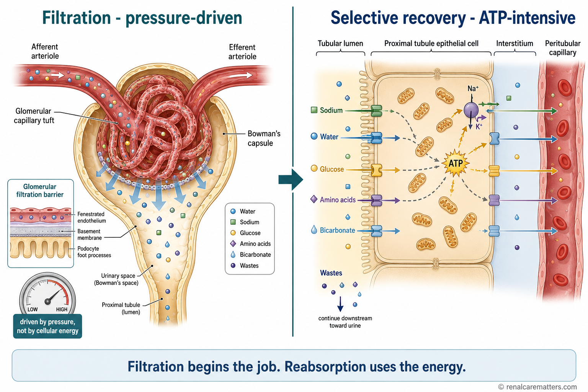
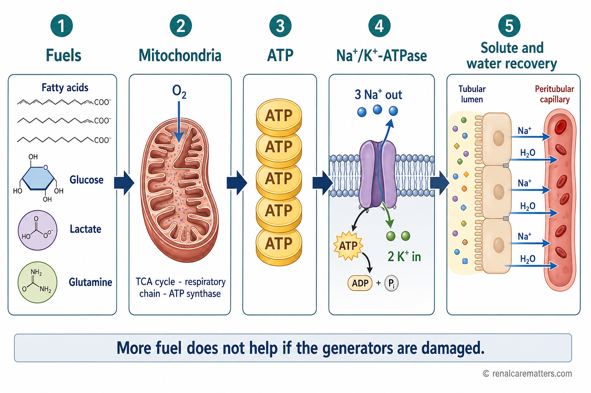
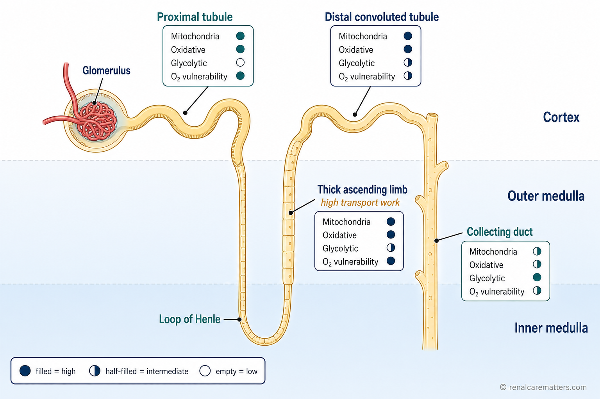
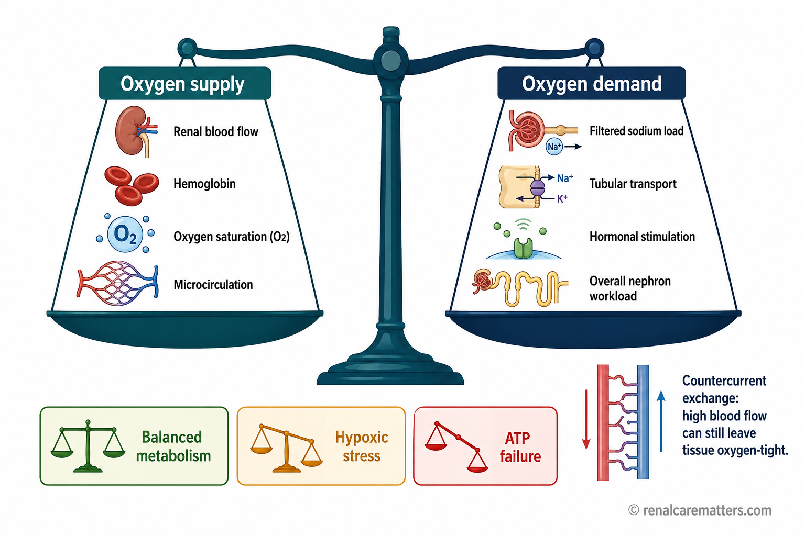
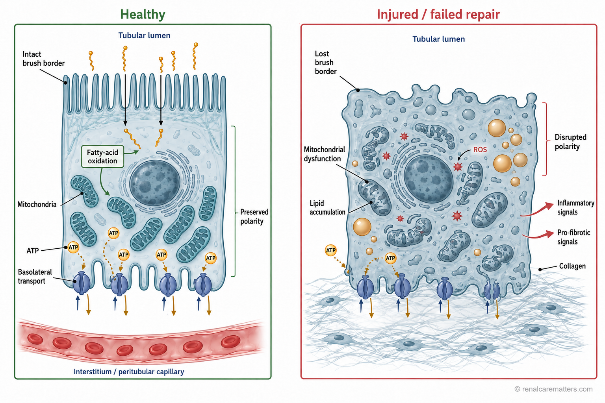
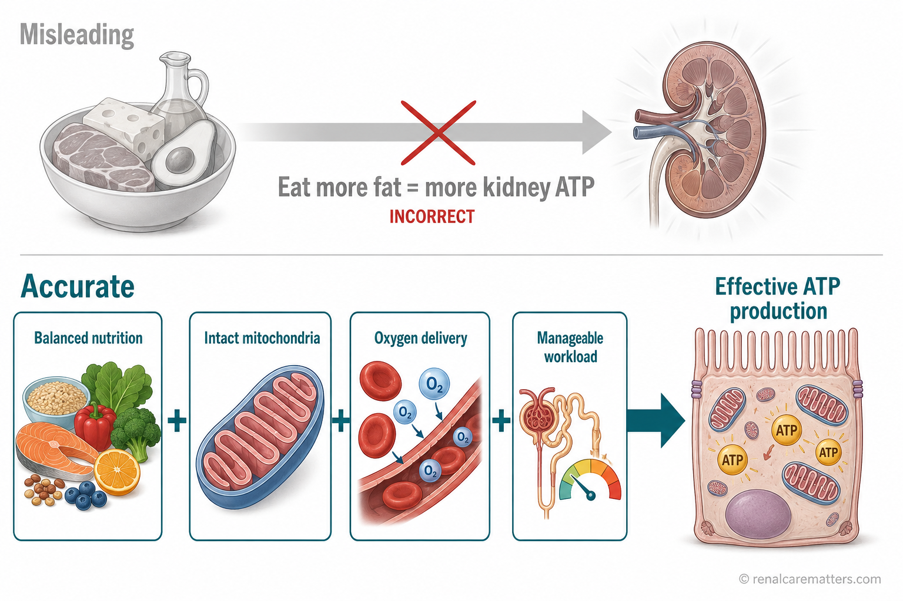
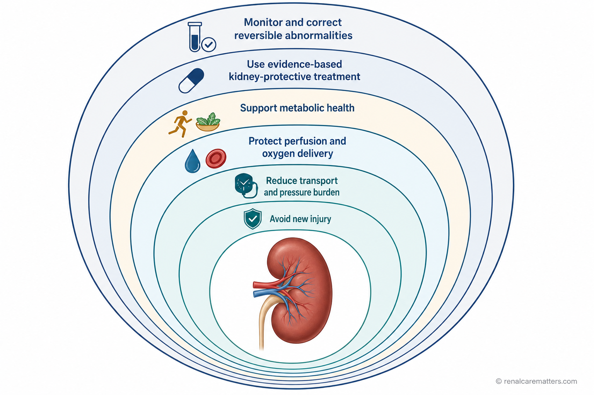

Your kidneys are working even while you sleep
The kidney works like a high-throughput recycling plant: the glomerulus lets a large volume of fluid enter, the tubules spend energy sorting and reclaiming what the body still needs, and mitochondria inside the tubule cells generate the ATP (adenosine triphosphate) that powers the whole line.
- ATP
- Adenosine triphosphate — the cell's usable energy currency
- Na⁺
- Sodium ion
Your kidneys operate continuously, even while you sleep. They are often described as filters, but that description is incomplete. A more accurate mental model is a recycling factory.
Each day, the glomeruli allow an enormous amount of water and small dissolved substances to enter the nephron. The tubules then sort this material with remarkable precision. They reclaim nearly all filtered water, glucose, amino acids, and bicarbonate, together with most of the sodium and other electrolytes the body still needs. What remains becomes urine. This selective recovery is expensive: tubular cells must constantly generate adenosine triphosphate (ATP) — the cell's usable energy currency — to maintain ion gradients, move solutes, preserve cell structure, repair membranes, and stay alive.
The kidney is therefore, at the same time, a filtration organ, a transport organ, an endocrine organ, an acid–base regulator, and a metabolic organ. Mitochondria — the tiny power plants inside cells — provide much of the ATP, particularly in the proximal tubule, where the burning of fatty acids supplies a major share of the fuel. Seen this way, kidney disease is partly a problem of factory workload, power generation, oxygen delivery, equipment damage, and failed repair — not simply a failure to remove waste.
Key idea
The kidney spends most of its energy not on making urine, but on preventing useful substances from being lost in urine. Filtration begins the job; selective recovery consumes much of the energy.
Inside the kidney recycling factory
The glomerulus is the receiving dock: it admits a broad mixture of water and small molecules. The tubules are the recovery lines that decide what the body keeps. The rest of this guide follows that material through the factory — and shows why protecting kidney energy is less about adding fuel and more about protecting the machinery.
What does the kidney spend energy on?

Two stages of kidney work. Stage one, at the glomerulus, is filtration — driven mostly by blood pressure and set by the glomerular filtration rate (GFR), not by cellular energy. Stage two, along the tubule, is selective recovery — the energy-hungry sorting that reclaims sodium, water, glucose, and other valuables before they are lost in urine.
- ATP
- Adenosine triphosphate — cellular energy currency
- GFR
- Glomerular filtration rate — how fast the glomeruli filter
To see where the energy goes, separate two jobs. Glomerular filtration is the first: at the glomerulus, blood pressure pushes water and small molecules across a filter into the tubule. This step is driven mostly by hydrostatic (blood) pressure, not by the cell burning fuel. The filtered load is simply how much of any substance crosses that filter each minute — the product of how fast the glomeruli filter (the glomerular filtration rate, or GFR) and how concentrated the substance is in blood.
The second job is tubular transport — reabsorption (pulling substances back out of the tubule into the blood) and secretion (adding substances into the tubule for disposal). This is where most of the energy is spent. And the single largest expense is sodium reabsorption. The kidney reclaims the vast majority of filtered sodium, and it must do so against concentration and electrical gradients — work that costs ATP. Water and many other solutes then follow sodium, either directly (osmosis pulls water toward reabsorbed sodium) or indirectly (sodium's movement powers the transport of glucose, amino acids, bicarbonate, phosphate, and more).
Different parts of the nephron handle different parts of the job. The proximal tubule reclaims the bulk of filtered sodium, water, glucose, amino acids, and bicarbonate. The loop of Henle — especially its thick ascending limb — reabsorbs salt to build the gradient that concentrates urine. The distal convoluted tubule and collecting duct perform the fine-tuning of sodium, potassium, acid, and water under hormonal control.
Because moving sodium is the dominant task, the kidney's oxygen use is tightly linked to how much sodium it is actively reabsorbing. Reviews of renal physiology consistently estimate that the large majority of the kidney's oxygen consumption supports transport-related ATP production, although the exact proportion varies with the model studied and the physiological state Supported by human & animal physiology. In other words: when the kidney reabsorbs more sodium, it burns more oxygen and more ATP.
Inside the kidney recycling factory — filtration vs. recovery
Filtration is like unloading a mixed truckload onto a sorting floor: quick, and driven by the pressure of the delivery, not by the workers. Reabsorption is the energy-consuming sorting and retrieval that follows. Sodium recovery drives many of the conveyor systems, which is why sodium transport accounts for so much of the kidney's energy use.
The Na⁺/K⁺-ATPase — the pump behind the kidney
Almost every recovery task in the tubule traces back to one molecular machine: the Na⁺/K⁺-ATPase (the sodium–potassium pump). It sits on the basolateral membrane — the side of the tubule cell facing the blood — and it spends ATP to push three sodium ions out of the cell and pull two potassium ions in.
The consequence is subtle but powerful: by constantly bailing sodium out of the cell, the pump keeps the sodium concentration inside the cell very low. That creates a steep downhill gradient for sodium to flow back into the cell from the tubule fluid. The cell then harnesses that downhill sodium flow to do other work — this is called secondary active transport, because the transporters themselves do not burn ATP directly; they ride the gradient the pump paid for.
Riding that gradient are the workhorses of recovery:
- Sodium–glucose cotransport — reclaims filtered glucose (the target of SGLT2 inhibitor drugs, discussed later).
- Sodium–amino-acid transport — recovers filtered amino acids.
- Sodium–bicarbonate transport and sodium–hydrogen exchange — recover bicarbonate and manage acid–base balance.
- Osmotic water movement — water follows the reabsorbed sodium.
So a single ATP-powered pump indirectly drives a whole network of recovery. If ATP runs short, the pump slows, the sodium gradient collapses, and the downstream transporters lose their power source.
Inside the kidney recycling factory — the central motor
The Na⁺/K⁺-ATPase is the main motor that turns the conveyor belts. The individual transporters are like belt-driven tools that need no motor of their own — they run on the motion the central motor provides. Cut the motor's power and every tool downstream stops.
ATP and mitochondria — the currency and the power plants

The renal energy chain. Fatty acids and other fuels are delivered to mitochondria, which use oxygen to make ATP through the tricarboxylic acid (TCA) cycle and the respiratory chain. ATP powers the sodium pump, the pump builds the sodium gradient, and the gradient drives the recovery of solutes and water. Fatty acids are a major fuel — but not the only one.
- ATP
- Adenosine triphosphate
- FADH₂
- An electron carrier feeding the respiratory chain
- NADH
- An electron carrier feeding the respiratory chain
- TCA
- Tricarboxylic acid cycle (Krebs cycle)
ATP: the immediate currency
ATP is the factory's immediately usable electricity. Cells cannot store a large reserve of it, so it must be regenerated continuously — a kidney cell recycles its own weight in ATP many times over across a day. ATP supports ion pumping, the cell's internal skeleton and shape, the polarity that keeps the "blood side" and "tubule side" of the cell distinct, the uptake of proteins from the filtrate, protein turnover, repair, and simple survival.
When ATP falls, the effects cascade: transport fails, the cell swells, it loses its polarity, calcium handling goes wrong, oxidative stress rises, and the cell can be injured or die. This is why energy failure is not an abstract idea — it is one of the central events in acute kidney injury.
Myth: eating high-energy foods directly supplies ATP to kidney cells
Reality: food provides metabolic substrates (fuels) and micronutrients. Kidney-cell mitochondria still have to convert those substrates into ATP. More dietary fuel does not automatically mean more mitochondrial ATP — and in excess it can worsen metabolic disease. ATP is made inside the cell; it cannot be swallowed.
Mitochondria: the power plants
Mitochondria are the power plants embedded inside the tubule cells. They convert fuels and oxygen into ATP through a process called oxidative phosphorylation (OXPHOS). In outline:
- Fuels (fatty acids, glucose-derived pyruvate, lactate, certain amino acids) are converted into a common currency called acetyl-CoA or other intermediates.
- The tricarboxylic acid (TCA) cycle — also called the Krebs cycle — processes these and loads up electron carriers (NADH and FADH₂).
- Those carriers hand their electrons to the respiratory chain (electron transport chain) on the inner mitochondrial membrane.
- As electrons pass down the chain, protons are pumped across the membrane, building a gradient.
- ATP synthase lets those protons flow back through it, and uses that flow to make ATP.
- Oxygen accepts the electrons at the very end of the chain, combining with them to form water. Without oxygen at the end, the whole line backs up.
This is why oxygen is indispensable for sustained energy production: it is the final electron acceptor that keeps the assembly line moving. Mitochondrial density is not uniform across the nephron — proximal tubule cells and thick-ascending-limb cells, which do the most transport work, are the most packed with mitochondria. Importantly, the proximal tubule has only a limited ability to fall back on glycolysis (making ATP without oxygen) when oxidative metabolism fails, which makes it especially vulnerable. And mitochondrial dysfunction can persist even after blood flow to the kidney has been restored — a key reason recovery from injury is not instantaneous.
Mitochondria do not work in isolation. Their health is tied to peroxisomes, the endoplasmic reticulum, the cell's quality-control recycling systems (autophagy and mitophagy, which clear damaged parts), the balance between oxidants and antioxidants, whether the cell stays properly specialized (differentiated), and inflammatory signaling. When these supporting systems fail, energy production suffers even if fuel is available.
Why proximal tubules prefer fatty acids — and why the nephron has no single fuel

A metabolic map of the nephron. Different segments favor different fuels and face different oxygen risks. The proximal tubule is rich in mitochondria and leans on burning fat — fatty-acid oxidation (FAO) — and other fuels oxidatively; the thick ascending limb runs the sodium-potassium-chloride cotransporter (NKCC2); medullary segments live in a lower-oxygen zone and lean more on glycolysis. The labels are qualitative, not exact percentages.
- FAO
- Fatty-acid oxidation — burning fat for energy
- NKCC2
- The Na-K-2Cl cotransporter of the thick ascending limb
- O₂
- Oxygen
The proximal tubule and fatty acids
Proximal tubule cells have very high energy requirements — they do the heaviest reabsorptive work. In the healthy state they rely mainly on mitochondrial oxidative metabolism, and fatty-acid oxidation (FAO) — the burning of fat — is one of their major energy pathways. As described in the deep dive above, fatty acids are activated, shuttled into mitochondria on carnitine, and broken down in repeated cycles that feed the TCA cycle and respiratory chain.
Foundational laboratory research shows why this matters. In experimental models, when tubular fatty-acid oxidation is disabled, cells run short of ATP, lose their specialized identity (dedifferentiate), accumulate fat droplets inside themselves, and can die — and kidneys with reduced fatty-acid-oxidation programs show more fibrosis (scarring) Animal & cell evidence Translational. This is important and influential work, but it is predominantly mechanistic and translational: it does not by itself prove that a diet or drug that restores fatty-acid oxidation will improve outcomes in people with CKD. That step has not been established.
An important distinction
Having more fat available is not the same as being able to oxidize fat safely. Fat delivery, fat uptake, fat storage, fatty-acid oxidation, and lipotoxicity (fat-related cell damage) are different things. A damaged tubule cell may take up and store fat while being unable to burn it — which harms the cell rather than fueling it.
The nephron does not use one universal fuel
It is tempting to summarize this as "cortex burns fat, medulla burns sugar," but that is an oversimplification. Metabolism differs by segment, cell type, oxygen environment, and physiological state:
| Nephron segment | Main transport work | Predominant metabolic character | Oxygen vulnerability | Clinical relevance |
|---|---|---|---|---|
| Proximal tubule (cortex) | Bulk reabsorption of Na, water, glucose, amino acids, bicarbonate | High mitochondrial density; strong oxidative metabolism (fatty acids, lactate, glutamine); performs gluconeogenesis; limited glycolytic reserve | High — poor fallback when oxidative metabolism fails | Most vulnerable to ischemic and toxic acute kidney injury (AKI); central to AKI→CKD transition |
| Thick ascending limb (outer medulla) | Salt reabsorption via NKCC2 to build the concentrating gradient | High transport workload; substantial oxygen requirement | High — sits in the low-oxygen outer medulla | Classic site of hypoxic injury; sensitive to increased workload |
| Distal convoluted tubule | Fine-tuning of sodium and electrolytes | Active electrolyte transport; metabolically flexible; segment-specific transporter regulation | Moderate | Target of thiazide-type regulation; electrolyte handling |
| Collecting duct | Final Na, K, water, and acid–base adjustment (principal & intercalated cells) | Greater capacity than the proximal tubule to use glycolysis in some contexts | Variable; better hypoxia tolerance in parts | Hormone-responsive final tuning (aldosterone, vasopressin) |
| Medulla (overall) | Countercurrent concentration of urine | Lower oxygen tension; greater relative reliance on glycolysis in selected cells | High — a narrow oxygen margin by design | The trade-off: efficient urine concentration comes with hypoxia risk |
The kidney is also a metabolic organ
Beyond transport, the kidney contributes to whole-body metabolism: it performs gluconeogenesis (making new glucose), handles lactate, metabolizes glutamine, produces ammonia to manage acid, participates in amino-acid metabolism, activates vitamin D, clears insulin, and integrates hormonal signals during feeding, fasting, stress, and exercise Human physiology. Renal glucose production becomes more prominent during fasting and certain metabolic states. This does not imply that prolonged fasting is required or beneficial for kidney health — only that the kidney is metabolically active. Reviews note that renal gluconeogenesis is altered in CKD and may matter both locally and system-wide, but deliberately manipulating it as a therapy is not established.
A metabolic paradox
The proximal tubule can release newly made glucose into the circulation while getting much of its own ATP from oxidative metabolism (largely fat) rather than simply burning the glucose it reabsorbs. Recovery and self-fueling are separate accounts on the factory's books.
Oxygen delivery versus oxygen availability

Kidney energy depends on a balance. On the supply side: blood flow, hemoglobin, oxygen saturation, and healthy small vessels. On the demand side: how much sodium is filtered and reabsorbed, hormonal stimulation, and overall nephron workload. When demand outstrips local supply, tissue slips from balanced metabolism into hypoxic stress and, if severe, ATP failure.
- ATP
- Adenosine triphosphate
- O₂
- Oxygen
Here is one of the least intuitive facts about the kidney: it receives a large share of the body's blood flow, yet its tissue is not uniformly well oxygenated. Oxygen delivery depends on blood flow, hemoglobin level, oxygen saturation, and how blood is distributed through the microcirculation. Oxygen demand depends heavily on how much sodium is being reabsorbed, which in turn depends on the filtered load.
Two features make the kidney's oxygen situation tighter than its rich blood supply suggests. First, the kidney's arteries and veins run close together in a countercurrent arrangement, which allows some oxygen to "short-circuit" from artery to vein before reaching the tissue. Second, the outer medulla — home to the hard-working thick ascending limb — operates near a relatively narrow oxygen margin even in health. Increase the workload (more filtration, more sodium delivered downstream) and demand can rise faster than supply.
On top of that, anything that reduces delivery — anemia (low hemoglobin), low blood pressure, low blood oxygen, congestion that backs pressure up into the kidney, small-vessel injury, or mitochondrial dysfunction that wastes the oxygen that does arrive — can tip the balance. The crucial nuance: a kidney can receive substantial blood flow and still develop a local oxygen-demand mismatch. Renal "ischemia" (inadequate oxygen for the work being done) is not the same as blood flow stopping entirely.
| What ATP production needs | Physiological role | What can impair it | Clinical response |
|---|---|---|---|
| Oxygen delivery | Final electron acceptor for oxidative ATP; sets the ceiling on aerobic energy | Anemia, hypoxemia, hypotension, venous congestion, microvascular injury | Treat anemia in context; avoid hypotension and volume depletion; manage congestion |
| Mitochondrial integrity | The power plant that makes ATP from fuel + oxygen | Ischemia–reperfusion, oxidative stress, toxins, aging | Prevent recurrent injury; avoid unnecessary nephrotoxins; don't smoke |
| Substrate (fuel) availability | Fatty acids, glucose, lactate, glutamine feed the engine | Starvation on one side; excess/ectopic fat and insulin resistance on the other | Adequate but not excessive energy intake; treat metabolic disease |
| Micronutrient sufficiency | Vitamins and minerals act as cofactors in energy pathways | Genuine deficiency (e.g., iron, B-vitamins) | Correct demonstrated deficiency; avoid over-supplementation |
| Manageable transport workload | Lower workload means lower oxygen & ATP demand | Glomerular hyperfiltration, high sodium load, high filtered load | Control BP and diabetes; sodium-glucose cotransporter-2 (SGLT2) inhibition; sodium moderation |
| Cellular differentiation | Specialized, polarized cells transport efficiently | Injury-driven dedifferentiation | Support repair; treat AKI promptly; follow up after AKI |
| Microvascular integrity | Peritubular capillaries deliver oxygen and remove waste | Capillary rarefaction (vessel loss) after injury | Prevent repeated injury; control cardiovascular risk factors |
Inside the kidney recycling factory — a local power shortage
A factory may receive many delivery trucks and still suffer a brownout on its busiest production line if power cannot reach that line, or if demand there outruns supply. High overall blood flow does not guarantee that every part of the kidney has the oxygen it needs.
What happens in acute kidney injury, failed repair, and CKD

Two fates for a proximal tubule cell. On the healthy side: fat is burned for energy, ATP is abundant, the cell keeps its polarity and transports well. On the injured, failed-repair side: mitochondria falter, fat is no longer burned but accumulates, ATP falls, reactive oxygen species (ROS) and inflammatory, scar-promoting signals rise.
- ATP
- Adenosine triphosphate
- FAO
- Fatty-acid oxidation
- ROS
- Reactive oxygen species — damaging oxygen-derived molecules
Acute kidney injury (AKI): an energy crisis
In acute kidney injury (AKI), a drop in oxygen delivery or a toxic insult sets off a chain reaction centered on energy failure:
The details matter: reduced blood flow followed by its return (ischemia–reperfusion) generates a burst of reactive oxygen species (ROS); mitochondria fragment; a pore called the permeability transition can open and finish off the cell; calcium floods in; the brush border (the absorptive surface) is lost; dead cells and debris can leak solutes backward and obstruct the tubule; and surviving cells enter a temporary cell-cycle arrest. Whether repair is adaptive (restoring normal cells) or maladaptive (leaving abnormal, scar-promoting cells) is decided in the days to weeks that follow.
One clinical caution follows directly: serum creatinine is a downstream marker of filtration, not a measurement of kidney ATP. Creatinine can lag behind — or fail to reflect — what is happening at the cellular energy level.
Inside the kidney recycling factory — mitochondrial injury
When the generators fail, the conveyor systems cannot keep running normally even if raw fuel is still sitting on the loading dock. Restoring the power supply — not delivering more fuel — is what lets the line restart.
Failed repair: the AKI-to-CKD transition
After AKI, some tubule cells redifferentiate and rebuild an intact lining. Others remain metabolically abnormal. Persistent cell-cycle arrest and senescence-like states can make cells secrete pro-inflammatory and pro-fibrotic signals; fibroblasts activate and lay down scar tissue (extracellular matrix); and the peritubular capillaries can drop out (rarefaction), worsening oxygen delivery. Energy failure and fibrosis then reinforce each other:
Metabolic reprogramming in CKD
In chronic kidney disease (CKD), injured tubules often shift away from the healthy pattern. Compared with a healthy proximal tubule — differentiated, oxidatively powered, effective at fatty-acid oxidation, ATP-rich, and transport-competent — an injured or fibrotic tubule tends to show reduced expression of fatty-acid-oxidation regulators, mitochondrial dysfunction, incomplete oxidative metabolism, fat accumulation inside cells, oxidative stress, altered glucose metabolism, loss of specialization, and inflammatory, pro-fibrotic signaling.
Healthy proximal tubule
- Differentiated, polarized epithelium
- Strong mitochondrial oxidative metabolism
- Effective fatty-acid oxidation
- High ATP production
- Maintained polarity and transport
Injured / fibrotic tubule
- Reduced fatty-acid-oxidation regulators
- Mitochondrial dysfunction
- Incomplete oxidative metabolism; lipid accumulation
- Oxidative stress; altered glucose metabolism
- Dedifferentiation, inflammation, fibrosis
This is an active area of research, and it should not be flattened into a single story. Metabolic reprogramming may drive injury in some settings; in others it may begin as an adaptive survival response; and its meaning likely varies by cell type, disease phase, and the cause of injury. Reviews increasingly stress cell-specific heterogeneity rather than one universal "CKD metabolic switch" Emerging / competing interpretations.
Inside the kidney recycling factory — fibrosis
Scar tissue is not merely inert filler. It distorts the production lines, reduces the small-vessel support that delivers oxygen, and forces the remaining working units to labor harder — which makes them, in turn, more vulnerable.
Does eating more fat give the kidneys more energy?

A diet reality check. The misleading model imagines that eating more fat directly makes more kidney ATP. The accurate model shows ATP emerging only when balanced nutrition, intact mitochondria, adequate oxygen delivery, and a manageable workload all come together.
- ATP
- Adenosine triphosphate
The direct answer is no. A high-fat diet is not a treatment for low kidney ATP. Dietary fat must be digested, absorbed, transported, taken up by cells, activated, and only then oxidized. Several things can break that chain: insulin resistance can raise circulating fatty acids while impairing proper fuel handling; excess energy intake promotes obesity, ectopic fat deposition, diabetes, oxidative stress, and glomerular hyperfiltration; diets rich in saturated and trans fats may worsen cardiometabolic risk; and kidney cells with damaged mitochondria may store fat rather than burn it. Fat quality and the whole dietary pattern matter far more than total fat quantity.
It helps to keep four things distinct: physiological fatty-acid oxidation (the normal, healthy burning of fat for energy), nutritional ketosis (a mild rise in ketones from low-carbohydrate eating or fasting), pathological ketoacidosis (a dangerous state seen mainly in uncontrolled diabetes), and the effects of ultra-processed high-fat diets versus a Mediterranean-style, unsaturated-fat pattern. They are not interchangeable.
What dietary pattern best supports kidney energetics?
No specific food or diet has been shown to "boost renal ATP" in humans. A more honest framing: a diet can support the conditions required for healthy energy metabolism, but no specific food has been shown to directly recharge kidney-cell ATP or reverse mitochondrial kidney injury. Within that limit, the best-supported pattern for most people with kidney disease is a predominantly minimally processed, plant-forward, Mediterranean-style diet, individualized to kidney function Clinical-outcome evidence for kidney & CV endpoints. In practice that emphasizes:
- Extra-virgin olive oil as the main fat
- Fish and other appropriate omega-3 sources
- Nuts and seeds — when potassium, phosphorus, energy needs, and chewing ability allow
- Legumes — when compatible with potassium and phosphorus targets
- Vegetables and fruit, individualized to serum potassium and the overall pattern
- Adequate but not excessive protein (see below)
- High-quality carbohydrates and dietary fiber
- Avoidance of phosphate additives in processed foods
- Sodium moderation
- Enough total energy to prevent protein-energy wasting
- Appropriate hydration — not universal forced water intake
The likely mechanisms are indirect but real: better insulin sensitivity, improved blood-vessel (endothelial) function, less oxidative stress and inflammation, a better lipid profile, better blood-pressure control, less exposure to ultra-processed food, healthier gut-microbe metabolites, and preserved lean muscle. Importantly, most human dietary studies measure blood pressure, albuminuria, eGFR decline, cardiovascular events, mortality, and nutritional status — not ATP production inside human proximal tubular cells.
Do not redesign your diet solely to "increase kidney ATP"
A diet that is right for one person can be unsafe for another. In people with CKD, dialysis, diabetes, heart failure, acidosis, malnutrition, or recurrent kidney stones, the targets for potassium, phosphorus, protein, sodium, fluid, carbohydrate, and total energy must be individualized. Seek personalized guidance if you have: eGFR below 30 mL/min/1.73 m²; dialysis treatment; recurrent hyperkalemia; persistent metabolic acidosis; high phosphorus; unintentional weight loss or protein-energy wasting; edema or heart failure; treatment with insulin or a sulfonylurea; pregnancy; recent AKI; or recurrent kidney stones. Do not use potassium-based "salt substitutes" without a hyperkalemia warning from your clinician.
Micronutrients for energy metabolism
Several vitamins and minerals act as cofactors or substrates in the energy pathways: thiamine, riboflavin, niacin, pantothenic acid, pyridoxine (vitamin B6), folate and vitamin B12, magnesium, iron, copper, selenium, phosphate, carnitine, and coenzyme Q10 (CoQ10). A genuine deficiency in any of these can impair energy metabolism. But three cautions apply: (1) supplementation above physiological need does not reliably increase ATP; (2) several of these nutrients accumulate or become harmful in CKD — magnesium, potassium, phosphorus, iron, vitamin A, and some herbal products all require individualized evaluation; and (3) specific claims must follow evidence. Carnitine supplementation has selected indications in some dialysis patients but is not a universal "mitochondrial therapy," and CoQ10 or antioxidant supplements should be judged on clinical trial evidence, not mechanistic plausibility. The rule of thumb: correct a demonstrated deficiency; do not assume that more of a cofactor means more ATP.
Protein and renal energy
Protein supplies amino acids for maintenance and repair. Too much protein can raise renal blood flow and filtered load in some contexts; too little risks protein-energy wasting. There is no single universal target — it depends on the setting:
| Clinical setting | Main objective | Protein considerations | Energy considerations | Potassium / phosphorus & cautions |
|---|---|---|---|---|
| No CKD (healthy adult) | General metabolic health | Usual balanced intake; quality over quantity | Match energy to activity; avoid excess | Individualize; whole-food potassium usually fine |
| Early CKD (G1–G3) | Slow progression; control risk factors | Often moderate, plant-forward protein; avoid very high intakes | Adequate energy to preserve lean mass | Prioritize additive-free foods; sodium moderation |
| Advanced non-dialysis CKD (G4–G5) | Reduce uremic and acid burden; preserve nutrition | Lower protein targets may be used, with dietitian supervision | Ensure sufficient energy to avoid wasting | Monitor K, phosphorus, bicarbonate closely |
| Hemodialysis | Replace treatment losses; fight catabolism | Higher protein needs than the general population | Adequate energy essential | Individualized K, phosphorus, fluid; watch phosphate additives |
| Peritoneal dialysis | Account for dialysate protein loss and glucose absorption | Higher protein needs; loss into dialysate | Factor in calories absorbed from dialysate | Individualized electrolytes; glycemic awareness |
| AKI recovery | Support repair; avoid under- and over-feeding | Needs vary; higher if catabolic or on kidney replacement therapy | Avoid energy deficit during recovery | Frequent electrolyte monitoring |
| Protein-energy wasting / frailty | Reverse malnutrition | Do not confuse wasting with intentional protein restriction — increase intake | Increase energy; consider oral supplements | Liberalize thoughtfully under supervision |
Special populations — diabetes with CKD, pregnancy, and critical illness — each need individualized targets and are beyond a single rule. The key safety point: protein-energy wasting must never be confused with deliberate protein restriction. Restricting protein in someone who is already malnourished causes harm.
Exercise and a practical strategy to protect the power system

Protecting the kidney's power system works in layers: avoid new injury, reduce the transport and pressure burden, protect blood flow and oxygen delivery, support overall metabolic health, use treatments proven to preserve kidney function, and monitor and correct reversible problems. These are practical layers, not official guideline "pillars."
- AKI
- Acute kidney injury
- BP
- Blood pressure
Regular exercise does not appear to recharge kidney ATP directly, but it supports the conditions that keep energy metabolism healthy: it drives new mitochondria in skeletal muscle, improves insulin sensitivity and glucose handling, improves blood-vessel function, lowers blood pressure, reduces visceral fat, preserves muscle mass, and improves functional capacity Human outcomes (fitness, function, risk factors). What has not been shown is that exercise raises kidney cortical ATP in routine clinical populations. Activity should be individualized — for stable CKD, for people on dialysis, for frailty, for cardiovascular disease, and during recovery after AKI — and medical clearance is wise when there is significant heart disease or other risk.
Putting the whole guide into action, here is a practical framework — five things to protect:
How kidney-protective medications change the energy equation
Kidney-protective drugs generally work not by adding fuel but by one of three routes: improving how fuel is used, reducing the cellular workload, or preserving the small vessels and mitochondria. Their benefit is established by kidney and cardiovascular outcomes in trials — not by measuring renal ATP.
SGLT2 inhibitors ("flozins")
Sodium-glucose cotransporter 2 (SGLT2) inhibitors block glucose (and sodium) reabsorption in the proximal tubule. This delivers more sodium to a sensor near the glomerulus (the macula densa), restoring a feedback loop (tubuloglomerular feedback) that eases the high pressure inside the glomerulus and shifts some of the transport workload downstream. They have additional proposed effects on oxygen use, ketone metabolism, cellular housekeeping (autophagy), inflammation, and mitochondrial signaling. In large trials such as DAPA-CKD and EMPA-KIDNEY, they clearly reduced kidney and cardiovascular events Proven outcome benefit. A caution on mechanism: simplified claims that these drugs uniformly "improve kidney oxygenation" are not settled — effects may differ between the cortex and medulla, by disease state, and by nephron adaptation.
RAS inhibitors
Renin-angiotensin system (RAS) inhibitors — ACE inhibitors and angiotensin-receptor blockers — reduce maladaptive high pressure inside the glomerulus and lower the amount of protein filtered, easing the tubule's protein-handling burden. They provide long-term protection even though some patients see an expected small early rise in creatinine as filtration pressure normalizes Proven outcome benefit.
Nonsteroidal mineralocorticoid-receptor antagonists
Nonsteroidal mineralocorticoid-receptor antagonists (nsMRAs), such as finerenone, have anti-inflammatory and anti-fibrotic effects and have shown kidney and cardiovascular outcome benefit in appropriate patients with diabetic CKD (for example, the FIDELIO-DKD trial) Proven outcome benefit. They require monitoring for high potassium (hyperkalemia).
GLP-1-based therapy
Glucagon-like peptide-1 (GLP-1) receptor agonists improve weight, glucose control, cardiovascular risk, and inflammation, and have shown kidney benefit in type 2 diabetes with CKD (for example, the FLOW trial with semaglutide) Proven outcome benefit. Their mechanism should not be reduced to "direct mitochondrial stimulation" — the benefits are multi-system.
Blood-pressure and volume management
Severe hypertension and hyperfiltration increase the mechanical and metabolic burden on the kidney; but excessive blood-pressure reduction, volume depletion, and low blood pressure can compromise perfusion. Congestion (fluid backing up, as in heart failure) can impair kidney perfusion pressure and microcirculation even when total body fluid is high. Treatment is individualized and guideline-based, not driven by speculative energetic mechanisms.
Dialysis does not replace renal metabolism
Dialysis replaces only some excretory and balance functions. It does not reproduce tubular energy metabolism, the kidney's endocrine work, local vitamin D activation, gluconeogenesis, ammonia production, reabsorption and secretion, or the metabolic signaling between the kidney and other organs. People on dialysis face particular risks — protein-energy wasting, treatment-related nutrient losses, carnitine depletion in selected patients, and low blood pressure during sessions that reduces tissue perfusion — which is why adequate energy and protein intake and individualized potassium, phosphorus, sodium, and fluid prescriptions matter so much. Dialysis patients should not routinely adopt high-fat or ketogenic diets to "increase energy."
Ketogenic diets, fasting, and ketones
Ketone bodies can serve as oxidative fuels, and nutritional ketosis is distinct from the dangerous diabetic ketoacidosis. But short-term metabolic changes do not establish long-term kidney protection, and ketogenic diets vary enormously in food quality. Potential concerns include acidosis, kidney stones, abnormal blood lipids, constipation, micronutrient gaps, altered medication needs, and poor sustainability. The evidence is insufficient to prescribe ketogenic diets specifically to improve renal mitochondrial ATP. Prolonged fasting is not required to activate healthy kidney metabolism, and fasting can be unsafe in frailty, pregnancy, eating disorders, advanced liver disease, unstable diabetes, people using insulin or sulfonylureas, acute illness, and selected CKD or dialysis patients. Crucially: "fatty acids are a kidney fuel" does not mean "ketogenic diets are kidney-protective."
When energy failure becomes clinically visible
No routine test directly reports renal cellular ATP. Downstream signs can include a rising serum creatinine, falling urine output, new albuminuria or proteinuria, electrolyte and acid–base disturbances, sugar or amino acids spilling into the urine from tubular dysfunction, urinary tubular-injury biomarkers (mostly in research or selected settings), imaging of perfusion or oxygenation, and biopsy evidence of tubular injury or fibrosis. Two reminders: a normal creatinine does not prove normal tubular energetics; and fatigue in CKD does not mean the kidneys themselves lack dietary fuel — fatigue more often reflects anemia, uremia, inflammation, sleep disorders, acidosis, heart disease, malnutrition, medication effects, or deconditioning.
Seven myths about kidney energy
Kidney energy: your questions answered
Key takeaways
Eight things to remember
- The kidney's greatest energy expense is tubular transport, especially sodium recovery.
- The Na⁺/K⁺-ATPase establishes the gradient that drives much of nephron reabsorption.
- Proximal tubular cells depend heavily on mitochondrial oxidative metabolism and fatty-acid oxidation.
- Oxygen supply and sodium-transport workload must remain balanced.
- Kidney injury can impair mitochondrial function and fatty-acid oxidation, causing ATP depletion and maladaptive repair.
- More dietary fat does not automatically provide more usable renal energy.
- Diet and exercise support metabolic health, but no food or supplement has been proven to directly recharge kidney ATP.
- The most reliable strategy is to reduce kidney workload, prevent recurrent injury, preserve perfusion, maintain adequate nutrition, and use evidence-based kidney-protective therapies.
Protecting kidney energy does not mean feeding the kidneys more fat, taking an ATP supplement, or forcing the body into ketosis. It means protecting the recycling factory as a complete system: keeping its workload manageable, preserving blood flow and oxygen delivery, maintaining healthy mitochondrial machinery, supplying adequate nutrition, preventing repeated injury, and using treatments proven to preserve kidney function. Healthy kidneys are not merely well fueled — they are efficiently organized, adequately oxygenated, metabolically flexible, and protected from excessive work.
Renal energetics: transport, oxygen, and tubular fuel
Renal function depends not only on perfusion and filtration but on the ability of tubular epithelia to match ATP supply to an exceptionally high transport workload. Much of what we label metabolic kidney disease is a failure of fuel handling, mitochondrial function, oxygen utilization, or workload regulation — not a shortage of dietary fuel.
Transport–oxygen coupling
Renal oxygen consumption (QO₂) is tightly coupled to active tubular sodium reabsorption; across models, the majority of renal QO₂ supports transport-linked ATP regeneration, with the precise fraction varying by species, segment, and physiological state Human & animal physiology. The efficiency of that coupling (TNa/QO₂, sodium reabsorbed per unit oxygen) is itself modifiable — it falls in diabetes and hypertension as mitochondrial uncoupling, oxidative stress, and altered nitric-oxide signaling increase the oxygen cost of transport, contributing to intrarenal hypoxia even when bulk perfusion is preserved (Hansell, Welch, Blantz & Palm, 2013).
Proximal tubular oxidative metabolism and FAO
The proximal tubule (PT) has minimal glycolytic reserve and depends on mitochondrial oxidative phosphorylation, with fatty-acid β-oxidation as a principal ATP source; it is also the primary site of renal gluconeogenesis, exporting glucose while oxidizing fatty acids for its own ATP. The landmark experimental work of Kang and colleagues demonstrated that defective tubular FAO produces ATP depletion, dedifferentiation, intracellular lipid accumulation, and cell death, and that reduced FAO programs (via lower PGC-1α and PPARα signaling) characterize fibrotic kidney tissue Animal & cell Translational. This is mechanistically foundational but has not been shown to translate into a dietary or pharmacologic FAO-restoration strategy that improves clinical CKD outcomes — a gap that should be stated explicitly to patients and trainees.
Bench-to-bedside caution
Suppressed tubular FAO, lipid droplet accumulation, and mitochondrial dysfunction are reproducible features of experimental and human fibrotic kidney — but their causal weight is heterogeneous by cell type, disease phase, and injury mechanism. Treat "restore FAO" as a research hypothesis, not a prescription.
Evidence versus extrapolation
| Claim | Evidence level | What is established | What remains uncertain |
|---|---|---|---|
| FAO is important in proximal tubules | Human physiology Animal | PT relies on mitochondrial oxidative metabolism; FAO is a major ATP source | Precise quantitative fuel mix in vivo across human PT sub-segments |
| Defective FAO contributes to fibrosis | Animal Translational | FAO suppression causes ATP loss, lipotoxicity, dedifferentiation; low FAO marks fibrotic tissue | Whether it is cause, adaptation, or consequence in each human CKD etiology |
| Mediterranean diet protects kidney function | Observational & some trial | Associated with slower eGFR decline, lower albuminuria, CV benefit | No direct measurement of PT ATP; residual confounding; effect size in advanced CKD |
| Ketogenic diets increase renal ATP | Hypothesis | Ketones are usable oxidative fuel | No outcome evidence for renal protection; safety concerns; not measured in human PT |
| CoQ10 repairs renal mitochondria | Hypothesis Mechanism | Cofactor plausibility; small/mixed trials in select mitochondrial disease | No reliable evidence of reversing CKD mitochondrial dysfunction |
| SGLT2 inhibitors reduce kidney events | Randomized trial (RCT) | DAPA-CKD, EMPA-KIDNEY, CREDENCE: reduced kidney & CV endpoints | Exact intrarenal O₂ effects by compartment; degree of ATP-sparing in vivo |
| Exercise directly increases renal ATP | Hypothesis | Improves systemic metabolic health, muscle mitochondria, function | No demonstration of increased renal cortical ATP in routine populations |
Metabolic reprogramming, gluconeogenesis, and segment heterogeneity
Injured and fibrotic tubules exhibit reduced FAO-regulatory signaling (PGC-1α, PPARα, CPT1), mitochondrial dysfunction and fragmentation, incomplete oxidative metabolism, intracellular lipid accumulation, oxidative stress, and a shift in glucose handling, alongside dedifferentiation and pro-fibrotic paracrine signaling Translational Mechanism. Whether this reprogramming is primarily pathogenic, an early adaptive survival response, or an epiphenomenon likely depends on cell type, disease stage, and mechanism — single-cell and spatial studies increasingly emphasize heterogeneity over a universal "metabolic switch." Heterogeneity also spans cell types beyond the tubule: with a cell-type-specific mitochondrial-isolation method in mice, podocyte mitochondria showed roughly twice the per-organelle respiratory (oxidative phosphorylation) capacity of tubular mitochondria, together with age- and sex-dependent decline — and standard cell culture artifactually halved that capacity while doubling reactive oxygen species (ROS), a caution for interpreting bench mitochondrial data (Campbell et al., 2026) Animal / bench.
Renal gluconeogenesis merits nuance. The kidney (chiefly the PT) contributes meaningfully to systemic glucose production, particularly in the post-absorptive/fasting state, and to lactate and glutamine handling and ammoniagenesis for acid–base regulation (Gerich, 2010). Renal gluconeogenesis is altered in CKD and diabetes and may have local and systemic significance, but therapeutic manipulation of it is not established, and this physiology is not an argument for prescribing fasting.
Do not overstate the map
The heuristic "cortex burns fat, medulla burns glucose" is a teaching simplification, not an absolute rule. Segment- and cell-type-specific metabolism (PT vs. TAL vs. DCT vs. collecting duct; cortex vs. outer vs. inner medulla) is the accurate frame — see the nephron table in the patient section.
Renal oxygenation, medullary vulnerability, and the AKI→CKD continuum
Clinician reference: the divergence between adaptive repair (restored FAO, ATP, polarity, transport) and maladaptive repair (persistent mitochondrial dysfunction, lipotoxicity, ROS, senescence, and fibrosis) after tubular injury.
- ATP
- Adenosine triphosphate
- FAO
- Fatty-acid oxidation
- ROS
- Reactive oxygen species
Renal tissue oxygenation is a function of delivery (renal blood flow, hemoglobin, SaO₂, microvascular distribution) and demand (filtered load and tubular transport, hormonal drive). Arteriovenous oxygen shunting and the countercurrent architecture leave the outer medulla — dominated by the O₂-hungry TAL — operating near a narrow margin. Increases in distal sodium delivery or filtered load raise transport work and can precipitate demand–supply mismatch; anemia, hypotension, hypoxemia, venous congestion, microvascular injury, and mitochondrial uncoupling all erode the margin. Renal ischemia is therefore best understood as inadequate O₂ for the work demanded, not necessarily as cessation of flow.
In AKI, mitochondrial dysfunction and ATP depletion drive Na⁺/K⁺-ATPase and cytoskeletal failure, loss of polarity, brush-border shedding, back-leak and intratubular obstruction, ROS generation on reperfusion, mitochondrial permeability transition, calcium overload, and cell-cycle arrest. The fork between adaptive redifferentiation and maladaptive repair — with senescence-associated secretory phenotype, fibroblast activation, matrix deposition, and peritubular capillary rarefaction — determines the AKI→CKD trajectory, in which energetic failure and fibrosis are mutually reinforcing. Serum creatinine is a downstream filtration marker and does not index tubular ATP; urinary tubular-injury biomarkers and functional/BOLD imaging remain largely research or selected-setting tools.
Workload-, perfusion-, and utilization-targeted therapy
Frame kidney-protective therapy by mechanism class: increasing fuel supply (rarely the lever), improving fuel utilization, reducing cellular workload, or preserving microvascular and mitochondrial function. Base recommendations on outcome trials and current final guidelines rather than energetic inference.
| Class | Primary energetic rationale | Pivotal evidence | Practical cautions |
|---|---|---|---|
| SGLT2 | Reduce proximal Na-glucose reabsorption; restore tubuloglomerular feedback; lower PGC; downstream workload shift; proposed autophagy/ketone/O₂ effects | RCT DAPA-CKD, EMPA-KIDNEY, CREDENCE | Expected initial eGFR dip; euglycemic ketoacidosis risk; genital mycotic infection; hold during acute illness |
| RAS inhibitor | Lower intraglomerular pressure and filtered protein load; reduce tubular protein-handling burden | RCT RAS-blockade in albuminuric CKD | Expected early creatinine rise; hyperkalemia; hold in volume depletion; avoid in pregnancy |
| nsMRA | Anti-inflammatory, anti-fibrotic; mitigates maladaptive signaling | RCT FIDELIO-DKD (finerenone) in diabetic CKD | Hyperkalemia monitoring; eGFR and K thresholds for initiation |
| GLP-1 RA | Weight, glycemic, CV, inflammatory effects; multi-system — not direct mitochondrial stimulation | RCT FLOW (semaglutide) in T2D + CKD | GI tolerability; not a substitute for SGLT2 or RAS inhibitors; individualize |
| BP / volume management | Reduce hyperfiltration & mechanical burden while preserving perfusion | Guideline-based Kidney Disease: Improving Global Outcomes (KDIGO) 2024 | Avoid over-treatment, hypovolemia, hypotension; congestion impairs perfusion despite fluid overload |
Mechanistic humility on oxygenation
Avoid blanket claims that SGLT2 inhibitors "improve kidney oxygenation." Cortical versus medullary effects diverge, depend on filtered load and disease state, and interact with nephron adaptation. The robust message is the outcome benefit; the compartmental O₂ story is still being resolved.
Nutrition: protein, dietary pattern, and safety by setting
Align protein and dietary-pattern guidance with current final guidelines (KDIGO 2024 CKD; KDIGO 2022 Diabetes in CKD; KDOQI 2020 nutrition) and verify exact targets against the guideline in force before applying them. Do not issue a single universal protein target: differentiate healthy adults, non-dialysis CKD, diabetes with CKD, hemodialysis, peritoneal dialysis, AKI, frailty/protein-energy wasting (PEW), pregnancy, and critical illness. In non-dialysis CKD, protein targets are generally lower than the general population under dietitian supervision; in maintenance dialysis, requirements are higher owing to treatment losses, inflammation, and catabolism. Protein-energy wasting must not be conflated with intentional restriction — in PEW, energy and protein intake should increase.
Endorse a predominantly minimally processed, plant-forward, Mediterranean-style pattern individualized to CKD stage, albuminuria, serum K/HCO₃/phosphorus, diabetes therapy, dialysis status, residual function, nutritional status, frailty, heart failure, volume status, stone history, and medications. Differentiate organic phosphorus in whole plant foods from highly bioavailable inorganic phosphate additives. Do not reflexively restrict potassium, plant phosphorus, protein, fluid, fruit, vegetables, legumes, or nuts; do not advise forced hydration; do not recommend potassium-based salt substitutes without a hyperkalemia caveat; and do not recommend supplements without addressing dose, renal clearance, interactions, contamination, and evidence quality. Human dietary trials predominantly measure BP, albuminuria, eGFR slope, CV events, mortality, and nutritional status — not proximal-tubular ATP.
Ketogenic diets & fasting
Evidence is insufficient to prescribe ketogenic diets to improve renal mitochondrial ATP, and they carry acidosis, lithogenic, dyslipidemic, micronutrient, medication, and sustainability concerns. Prolonged fasting is not required for healthy renal metabolism and is unsafe in frailty, pregnancy, eating disorders, advanced liver disease, unstable diabetes, insulin/sulfonylurea use, acute illness, and selected CKD/dialysis patients. "Fatty acids are a renal fuel" does not imply "ketogenic diets are renoprotective."
Clinical pearls
- Renal QO₂ tracks active Na reabsorption; a normal serum creatinine does not exclude tubular energetic stress or reduced TNa/QO₂ efficiency.
- The PT is glycolysis-limited and FAO-dependent — hence its selective vulnerability to ischemic and toxic AKI and its central role in the AKI→CKD transition.
- Expect and explain the early eGFR dip with SGLT2 inhibitors and the early creatinine rise with RAS blockade as hemodynamic, not injurious — do not discontinue reflexively.
- Treat energetic failure indirectly: reduce workload (BP, glycemia, hyperfiltration, sodium), protect perfusion/oxygen (euvolemia, anemia in context, congestion, avoid hypotension), preserve mitochondria (no smoking, activity, insulin sensitivity, avoid nephrotoxins), and preserve repair (prompt AKI care and follow-up, albuminuria control, guideline-based therapy).
- Attribute CKD fatigue to its actual drivers (anemia, uremia, inflammation, sleep disorders, acidosis, CVD, malnutrition, medications, deconditioning) — not to a dietary fuel deficit in the kidney.
- Correct demonstrated micronutrient deficiency; avoid supraphysiologic cofactor dosing as pseudo-mitochondrial therapy, and remember several nutrients accumulate or harm in CKD.